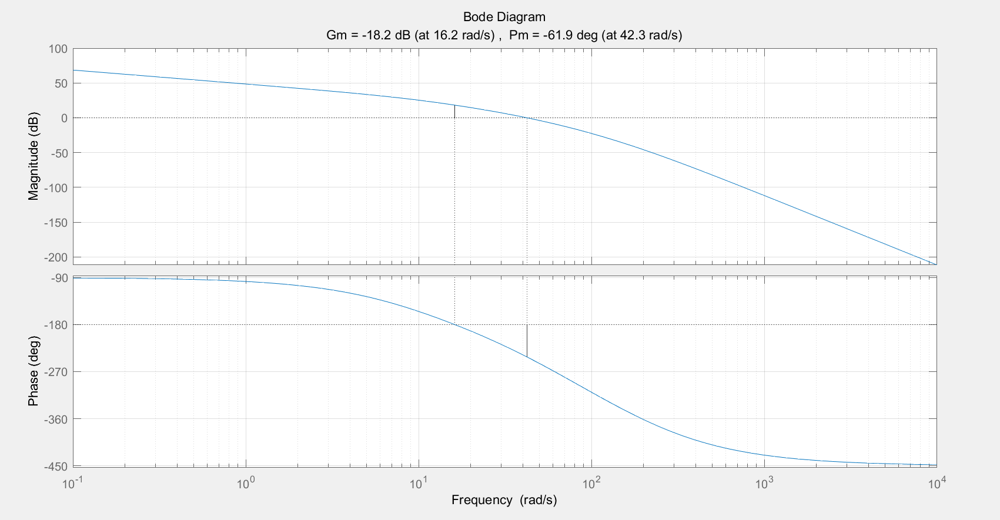
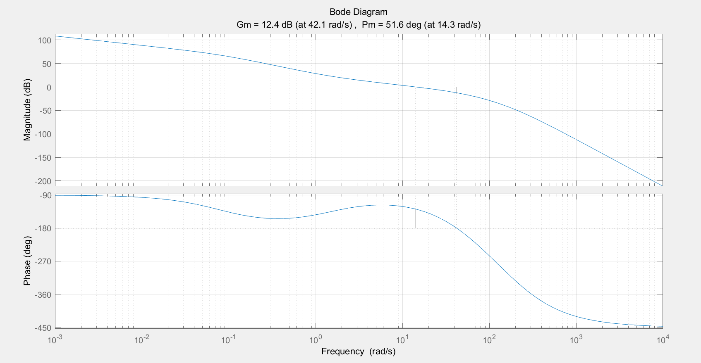
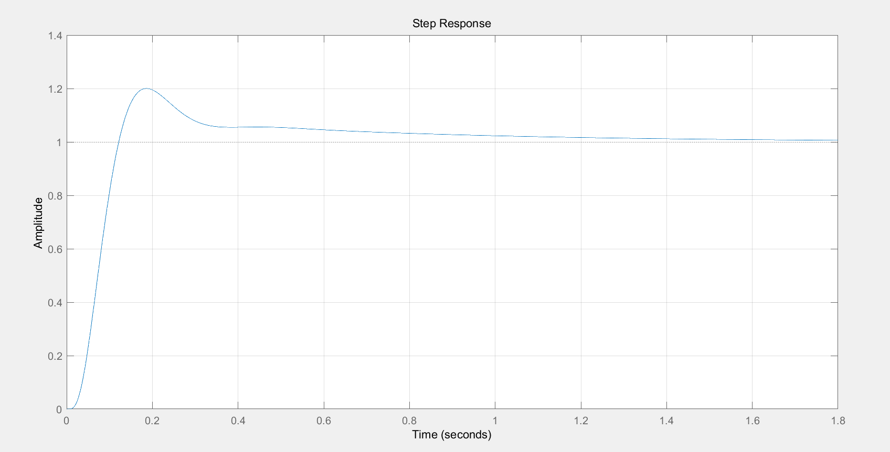

原题：已知某单位反馈系统开环传递函数为
G(s)=s(0.1s+1)(0.02s+1)(0.01s+1)(0.005s+1)1
若性能指标要求如下：
γ=45∘,Kv=200,ωc=13.5
试确定校正装置。用给出计算依据并用Matlab编程绘图。
此处将 K 改为 200+学号后两位（68） = 268 。
解：由速度误差常数的要求可求得K=268,则可绘制KG(jω)的波德图。在Matlab窗口中输入下列命令：
z = [];
p = [0 -10 -50 -100 -200];
k=268*10*50*100*200;
G = zpk(z,p,k);
margin(G);
grid on

从图中可以看出，相角裕度为−61.9∘, 剪切频率为42.3rad/s，这显然不能满足性能指标要求。
由于补偿角为 ϕm=61.9+45=106.9∘，单独使用超前校正装置或是滞后校正装置都不能很好的达到设计要求，因此这里考虑使用串联相位滞后超前校正。
设校正装置的传递函数为
Gc=(βτ1s+1)(τ2/β+1)(τ1s+1)(τ2s+1)
其中 ω1=1/τ1,ω2=1/τ2。
按照给定的要求选定系统剪切频率为 ωc=15rad/s , 为使系统稳定，应保证开环对数幅频特性以−20dB/dec的斜率穿越频率轴，即中频段的斜率为−20dB/dec。
为使校正后系统的开环增益不低于 268，校正前后系统的低频段特性应保持一致。中频段与低频段之间用斜率为 −40dB/dec 的直线连接，连接线与中频段相交的交接频率 ω1 与 ωc 不宜离的太近，取ω1=ωc/10=1.5rad/s ;同时取ω2=10rad/s,则 τ1=1/1.5=0.6667 , τ2=1/10=0.1 。
最后来确定 β 的取值。由于校正后的剪切频率为 ωc=15rad/s，则对应ω1=1.5rad/s处的增益为
20lg1.515=20
而未校正系统在ω1=1.5rad/s 时的增益为
20lg1.5268=45.0409
两者相减就得到串联校正装置在1.5rad/s≤ω1≤10rad/s 区间的增益，即20lgβτ1τ1=20−45.0409=−25.0409dB ，解得 β=17.8667。
因此串联相位滞后超前校正装置的传递函数为
Gc(s)=(11.9117s+1)(0.0056s+1)(0.6667s+1)(0.1s+1)
校正后系统的开环传递函数为
G(s)=s(0.02s+1)(0.01s+1)(0.005s+1)(11.9117s+1)(0.0056s+1)200(0.6667s+1)
可通过Matlab仿真验证设计结果是否满足性能指标要求。
在Matlab命令窗口中输入下列命令，绘制校正后系统的伯德图：
z = [-1/0.6667];
p = [0,-1/11.9117,-1/0.0056,-1/0.02,-1/0.01,-1/0.005];
k = 268*0.6667/(11.9117*0.02*0.01*0.0056*0.005);
G = zpk(z,p,k)
figure(1)
margin(G); grid on
G_closeloop=feedback(G,1)
figure(2)
step(G_closeloop); grid on
运行程序后得到校正后系统的系统伯德图如下所示:

由伯德图可知，剪切频率ωc=14.3rad/s ，γ=51.6∘, 这些都满足期望的性能指标。
校正后闭环系统的阶跃响应如下图所示，可见系统具有较好的动态性能与稳态性能。
